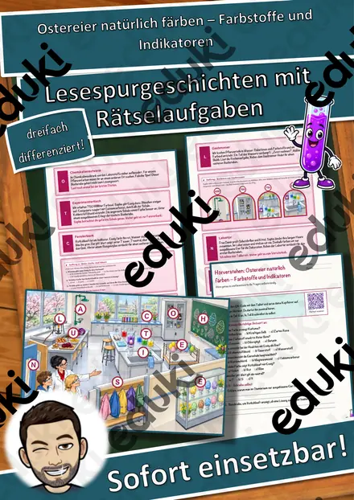
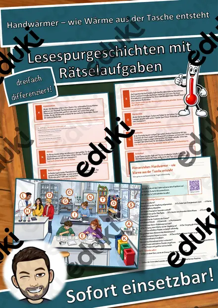
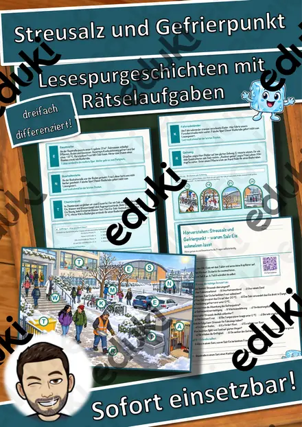
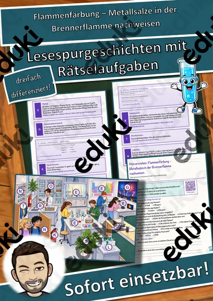
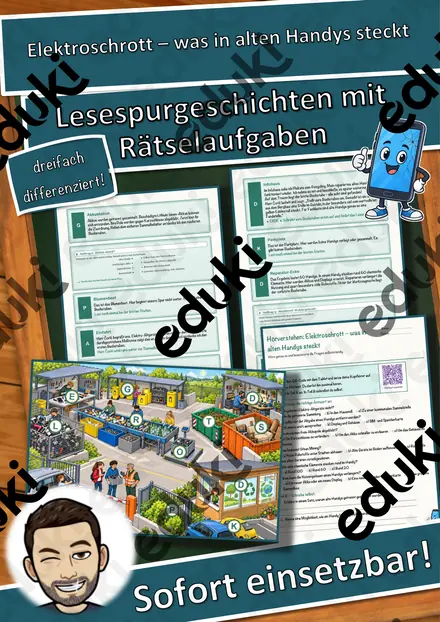
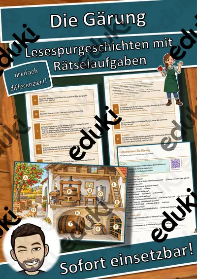
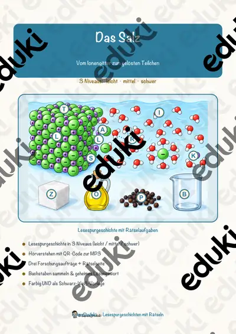
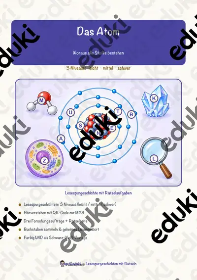

Die Destillation – Lesespurgeschichte mit Rätselaufgaben (Klasse 8)
Mit dieser differenzierten Lesespurgeschichte erarbeiten die Lernenden selbstständig und motivierend, wie man mit einer Destillation ein Gemisch aus Flüssigkeiten trennt – von der Heizquelle über den Rundkolben, das Thermometer und den Kühler mit Kühlwasser bis zum Auffangkolben. Die Chemikerin Frau Faber führt durch den Laboraufbau.
So funktioniert die Lesespur: Die Lernenden lesen einen Abschnitt, entnehmen dem Hinweis einen Teil des Aufbaus, suchen ihn auf dem farbigen Labor-Plan (einer anschaulichen Zeichnung) und lesen dort weiter. An jeder richtigen Station sammeln sie einen Buchstaben. Vier Sackgassen (Reagenzglas, Trichter, Waage, Mörser) dienen der Selbstkontrolle und machen deutlich, dass diese Geräte zwar im Labor stehen, aber nicht zu diesem Aufbau gehören. Am Ende ergeben die gesammelten Buchstaben ein geheimes Lösungswort rund um das Thema.
Inhaltlich verbindet das Material zentrale Themen der Chemie: das Stofftrennverfahren Destillation, den Aufbau der Apparatur, das Verdampfen und Kondensieren, die Trennung eines Gemischs anhand unterschiedlicher Siedetemperaturen sowie die Begriffe Reinstoff, Gemisch und Destillat. Ein anschauliches, lehrplannahes Thema aus dem Chemieunterricht (Stoffe und Trennverfahren).
Das ist enthalten:
- Lesespurgeschichte in drei Niveaus (leicht, mittel, schwer) – ideal zur Differenzierung
- farbiger Labor-Plan mit allen Stationen
- vier eingebettete Aufträge: Begriffe verbinden, Quiz, Rechenaufgabe, Steckbrief
- Hörverstehen mit QR-Code zum Hörtext (Teil A Ankreuzen, Teil B frei schreiben)
- Rätselseite (Wörter-Suchsel und Wissensquiz)
- Ausmalbild
- ausführliches Lösungsblatt mit Fundorten
- das komplette Material zusätzlich als drucksparende Schwarz-Weiß-Vorlage
Geförderte Kompetenzen: sinnentnehmendes und selektives Lesen, Anwenden von Lesestrategien, konzentriertes Zuhören sowie das chemische Verständnis von Stofftrennung und Destillation.
Einsatz: Übungsphasen, Wochenplan, Stationenlernen, Vertretungsstunden, Freiarbeit und Nachhilfe. Umfang: 23 Seiten.
Ähnliche Materialien

Ostereier natürlich färben – Farbstoffe und Indikatoren – Lesespurgeschichte mit Rätselaufgaben (Klasse 8)

Handwärmer – wie Wärme aus der Tasche entsteht – Lesespurgeschichte mit Rätselaufgaben (Klasse 8)

Streusalz und Gefrierpunkt – warum Salz Eis schmelzen lässt – Lesespurgeschichte mit Rätselaufgaben (Klasse 8)

Flammenfärbung – Metallsalze in der Brennerflamme nachweisen – Lesespurgeschichte mit Rätselaufgaben (Klasse 8)

Elektroschrott – was in alten Handys steckt – Lesespurgeschichte mit Rätselaufgaben (Klasse 8)

Die Gärung – Lesespurgeschichte mit Rätselaufgaben (Klasse 8)

Das Salz – Lesespurgeschichte mit Rätselaufgaben (Klasse 8)
